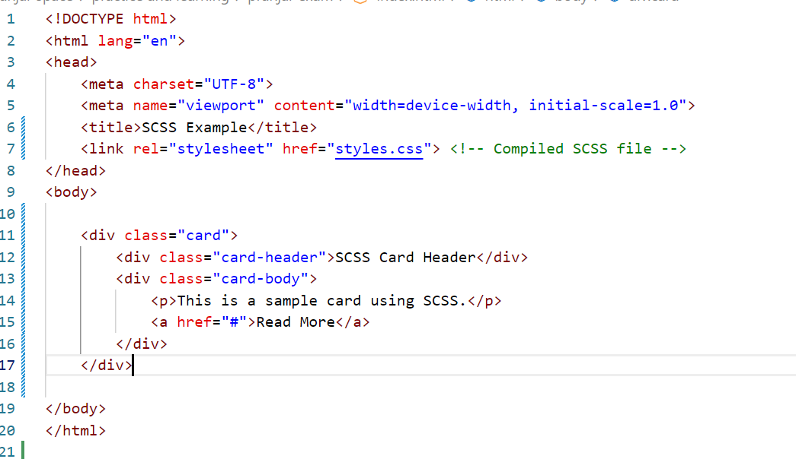
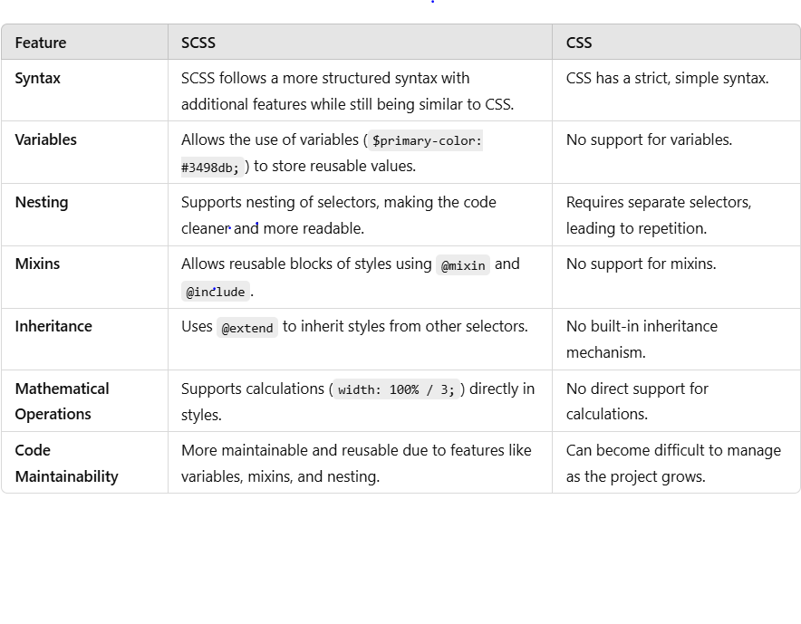
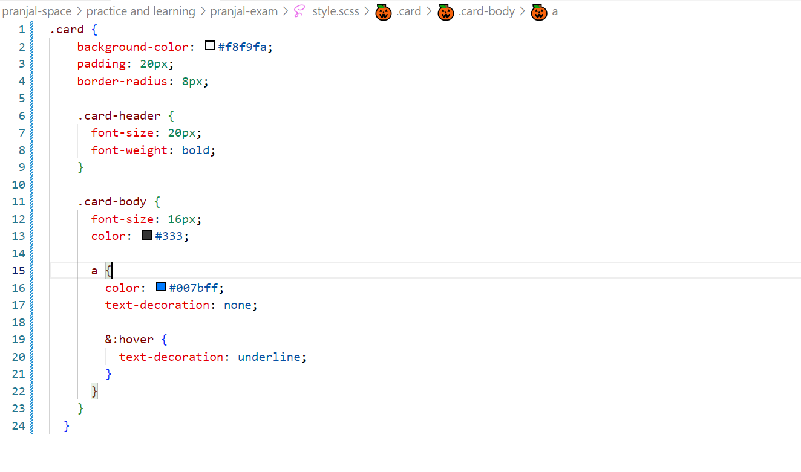

powered by programming ashram
Created by Pranjal Mankar
Ans: The term SCSS is an acronym for Sassy Cascading Style Sheets. It is basically a more advanced and evolved variant of the CSS language. Natalie Weizenbaum and Chris Eppstein created it, and Hampton Catlin designed it. It comes with more advanced features- thus often called Sassy CSS.
Ans: SCSS is the preprocessor of the provide us to some additional and css features . There are some scss featuresa which is @mixing variables import extend prefixers functions mapping , nesting reusable CSS component and most popular feature in 7 in 1 architecter . Which is help us to create a scalable CSS structure.
Ans: SCSS (Sassy CSS) is a preprocessor for CSS that extends its capabilities by adding powerful features like variables, nesting, mixins, functions, and more. It is a superset of CSS, meaning that all valid CSS code is also valid SCSS. SCSS makes writing and managing stylesheets easier, especially for large-scale projects, by improving code organization, reusability, and maintainability.

Variables – Store reusable values such as colors, font sizes, and margins.
Nesting – Write CSS in a hierarchical structure that matches HTML elements.
Mixins – Define reusable blocks of styles with optional parameters.
Inheritance – Share styles between selectors using @extend.
Functions & Operators – Perform calculations and manipulate colors dynamically.
Modules (@use and @import) – Break styles into modular and manageable parts.
Preprocessing: SCSS files (.scss) need to be compiled into standard CSS (.css) before browsers can use them.
Syntax: SCSS allows more advanced syntax while still being compatible with regular CSS.
Features:
Ans: A Mixin is a programming pattern used to add reusable functionality to classes without using traditional inheritance. It allows you to "mix in" additional behavior into a class without modifying its inheritance hierarchy.
Key Features of Mixins:
Ans: SCSS (Sassy CSS) is a preprocessor scripting language that extends CSS. It adds powerful features like variables, nesting, mixins, inheritance, and functions, which make CSS more maintainable and scalable. SCSS is part of the Sass (Syntactically Awesome Stylesheets) preprocessor and is written in a syntax similar to CSS, making it easier to learn and use.
Key Differences Between SCSS and CSS

Ans:
Ans: A Mixin is a programming pattern used to add reusable functionality to classes without using traditional inheritance. It allows you to "mix in" additional behavior into a class without modifying its inheritance hierarchy.
Ans: Nesting in SCSS allows you to write styles in a hierarchical structure that follows the HTML structure, making the code more readable and organized.

Ans: A Mixin is a programming pattern used to add reusable functionality to classes without using traditional inheritance. It allows you to "mix in" additional behavior into a class without modifying its inheritance hierarchy.